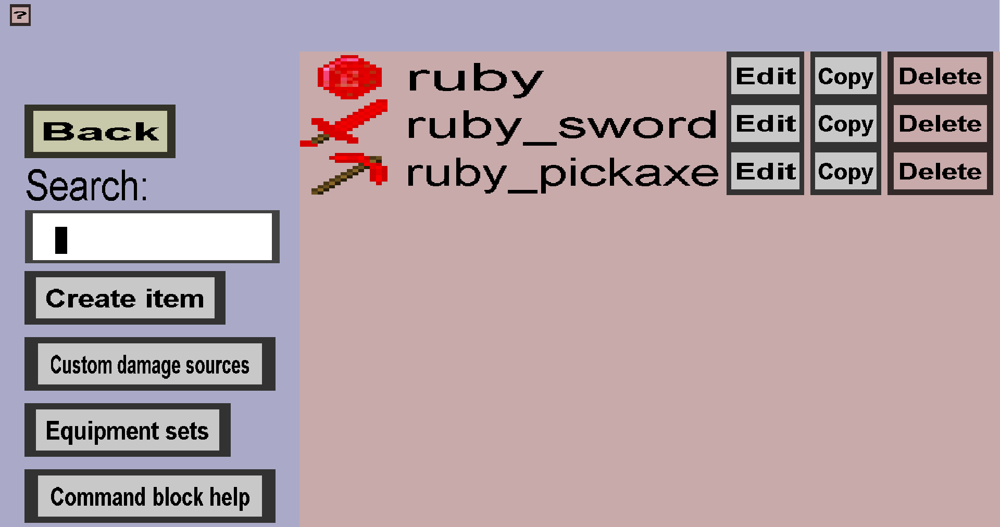

The item overview shows all custom items and can be used to edit them or create new ones. It should look like this after completing the ruby tutorial:
Every custom item in your item set will be shown here. If there are many, you will need to scroll with the mouse wheel or the arrow keys to see them all. Just like for textures, there is an 'Edit', 'Copy' and 'Delete' button for every item. Clicking on 'Edit' will bring you to the right item edit menu for the custom item, where you can make changes to it. Clicking on 'Copy' will bring you to the right item edit menu for the custom item, where you need to change the name and internal damage (and optionally more) before clicking on the 'Create' button to perform the copy. Clicking on 'Delete' will remove the custom item from your item set. Unlike deleting textures, this is not very quickly undone. It is not allowed to delete custom items that are used in crafting recipes, mob/block drops or are the repair item of a custom tool.
Then there are the remaining buttons: 'Back', 'Create item' and 'Command block help'. The 'Back' button will bring you back to the item set edit menu. The 'Create item' button will bring you to the custom item type selection where you need to decide what kind of custom item to create. Finally, there is the 'Command block help' button, which will bring you to the command help page which will show you how to use custom items in vanilla commands like /give and /summon.